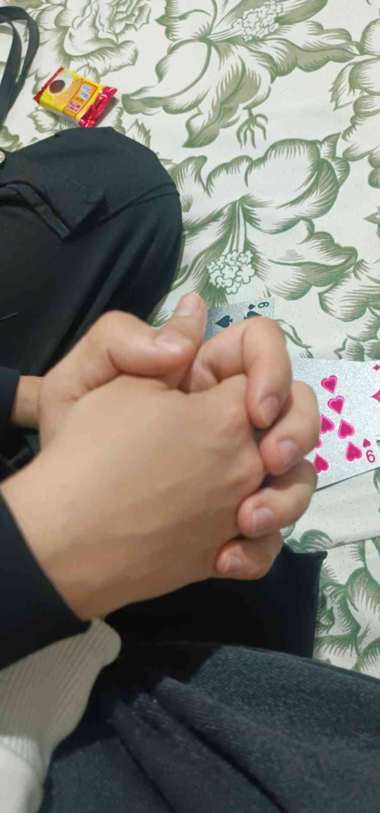

که هیچوقت ساده شروع نشد ❤️
یه ساعت معمولی برای بقیه...
ولی برای من یادآور قشنگترین لحظههای زندگیه ❤️
هنوز یادمه اولین باری که بهت پیام دادم.
گفتم: «میشه بهت بگن پیشی؟»
خندیدی و گفتی: «میشه، آره... ولی حالا چرا پیشی؟»
و من گفتم: «چون دوست دارم مثل گربه زورت بزنم.»
گفتی: «من زور میزنم، تو گاز بگیر.»
و از همونجا قصه ما شروع شد...
از همون روزی که وارد زندگیم شدی، بهت میگفتم دختر بابا، زندگیم، همه داراییم، و هزار تا اسم قشنگ دیگه...
اما بین همهشون، پیشی یه چیز دیگه بود.
یک سال کنار هم خندیدیم، شیطنت کردیم، حرفهایی زدیم که فقط خودمون میفهمیدیم، رویا ساختیم، برای ماریا و مسیحا اسم انتخاب کردیم، دست همدیگه رو گرفتیم، عکس گرفتیم، و خاطرههایی ساختیم که برای همیشه توی قلب من میمونن.
اما کنار همه این خاطرههای قشنگ، یه حقیقت هم هست.
من اشتباه کردم.
خیلی وقتها با گیر دادن، اذیت کردن، اصرار بیجا، و رفتارهایی که نباید انجام میدادم، باعث ناراحتیت شدم.
تو بارها بهم فرصت دادی. بیشتر از چیزی که حقم بود.
و من همیشه قدر اون فرصتها رو اون موقع نفهمیدم.
این صفحه برای بهونه آوردن نیست. برای فرار از مسئولیت هم نیست.
فقط میخوام بدونی که اشتباهاتم رو میبینم. میفهمم چقدر ناراحتت کردم. و بابتش واقعاً متأسفم.
پیشی...
من هنوز همون آدمیام که وقتی اسم تو میاد لبخند میزنه. هنوز وقتی ساعت ۱۸:۱۸ رو میبینم یاد تو میافتم. هنوز وقتی به آینده فکر میکنم، خاطرههای تو از ذهنم رد میشن.
و هنوز هم...
۲۰۰۰۰۰۰۰۰۰۰۰۰۹۰۰۰۰۰۰۰۰۰۰۰۰۰۸۰۰۰۰۰۰۰۰۰۰۰۰۰۷۰۰۰۰۰۰۰۰۰۰۰۰۶۰۰۰۰۰۰۰۰۰۰۰۵۰۰۰۰۰۰۰۰۰۰۰...
تا بینهایت عاشقتم.
فقط دلم میخواست این بار، بدون دعوا، بدون لجبازی، بدون بهونه...
حرف دلم رو کامل بخونی.
دوستت دارم، پیشی ❤️
